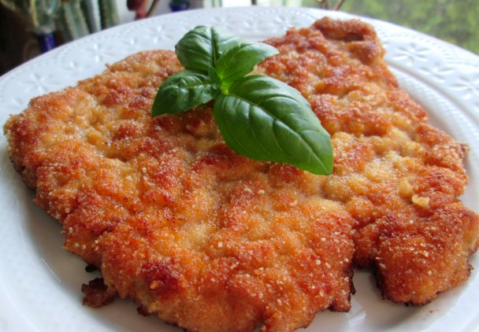

Description
Kotlet schabowy - kotlet panierowany ze schabu (z kością lub bez)
przypominający sznycel wiedeński. Współcześnie jedna z popularnych potraw w
kuchni polskiej.
około 400g schabu wieprzowego bez kości
1 duże jajko
2 łyżki mąki pszennej
kilka łyżek bułki tartej
1 łyżeczka ostrej musztardy, np dijon
1 łyżka wody
sól
pieprz
tłuszcz do smażenia
Steps
-
Mięso kroję ostrym nożem na równej szerokości plastry. Na ogół wychodzi
około 2cm szerokości.
-
Nacinam błonę na mięsie w kilku miejscach tak, by przeciąć ją do końca.
Zapobiegnie to kurczeniu i zwijaniu się mięsa na patelni.
-
Tłuczkiem rozbijam mięso do preferowanej grubości. Przed rozbiciem można
przykryć mięso folią spożywczą. Zapobiegnie to przypadkowemu przerwaniu
mięsa oraz rozpryskiwaniu.
-
Rozbite kotlety oprószam solą i pieprzem z obu stron. Czasami używam
soli ziołowej.
-
Jajko roztrzepuję w płaskim naczyniu razem z musztardą i łyżką chłodnej
wody. Woda powoduje, że jajko się nie ciągnie.
- Kotlety oprószam w mące, a jej nadmiar dokładnie strzepuję.
- Następnie panieruję starannie w jajku i bułce tartej.
-
Rozgrzewam patelnię. Gdy jest gorąca, dodaję tłuszcz, a gdy ten się
rozpuści/rozgrzeje układam kotlety.
-
Smażę z obu stron na złoty kolor przewracając mięso kilka razy, by
upiekło się równomiernie.
-
Po usmażeniu od razu zdejmuję z patelni i osączam z nadmiaru tłuszczu.
-
Jeśli smażę większą ilość kotletów, staram się po każdej partii zmieniać
tłuszcz, aby usunąć resztki bułki tartej, które mają tendencję do
szybkiego przypalania się.
-
Podaję z krótko smażonymi warzywami, sałatką z buraczków, marchewki, lub
zasmażaną kapustą itp. i pure ziemniaczanym bezpośrednio po
przygotowaniu.